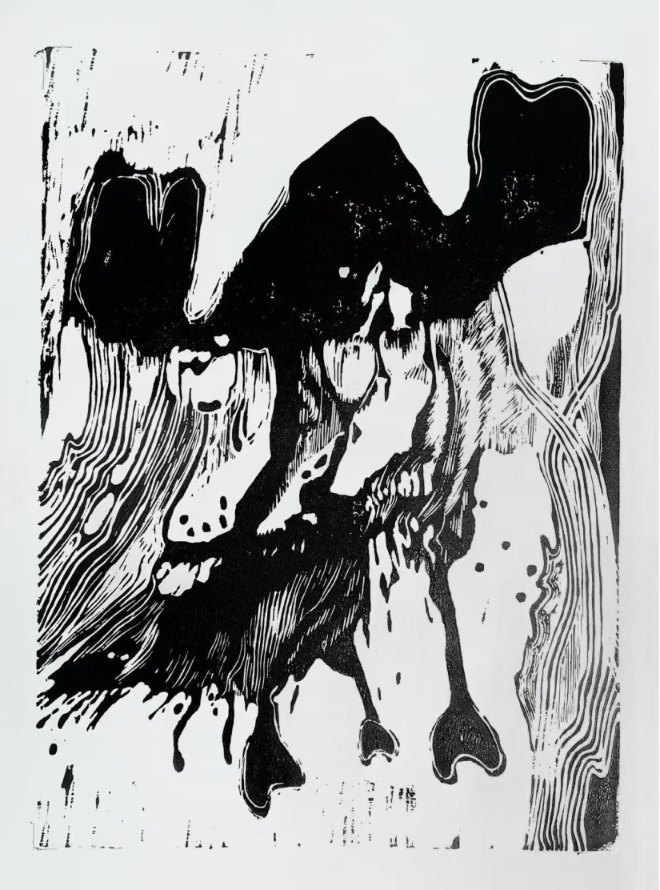

Perhaps you've also overheard the puzzlingly proverbial "I like men who are a little bit ugly." Or you've faced David or The Starry Night only to feel a brief pulse of awe before disappointment. You've attended the spectacle, and you can put it in the family newsletter or an instagram story, but where was the promised sublimity? These two events could be motivated by the same desire. I think there is a natural longing in all of us to participate in the things we perceive. ... READ MORE
Imagine you could live your life experiencing the greatest pleasures of the world. All your dreams and greatest desires would come true, whether it's making groundbreaking scientific discoveries or becoming a world-renowned politician. The imaginations are endless. This is what Robert Nozick's experience machine offers: a chance to live your greatest, most pleasurable life. What of reality? Would you choose this reality? More importantly, what does your answer reveal about how committed you truly are to reality? ... READ MORE
The Only Thing We Fear Is You: How Chernobyl Turned Fear of The Unknown Into Fear of Ourselves
Deniz DurusoyNo one familiar with the history of "Weird Fiction"1 can say that the books of the genre have as important of a role in our lives as they did at the end of the 19th century. Back in the good old days when death by polio was a common occurrence and the world was getting ready for the World War(s), writers such as Arthur Machen and E.T.A Hoffman and their sometimes gruesome, or dreadful, or other times thought-provoking stories has shaped what we now call fiction. Nevertheless, those days are long past. Apart from the rare sighting of a horror geek (such as myself) one would rarely see anyone interested in "Weird Fiction" or be aware of the writings of the controversial Lovecraft or the underappreciated Ramsey Campbell. ... READ MORE
The term 'simulation' brings to mind images straight out of The Matrix. Thousands of human bodies in vats, powering the outside world. Simulated lives that can be woken up from once they reach the realization that "this isn't reality". Post-structuralist Jean Baudrillard's conception of 'simulation' is much more nuanced. In his 1981 book Simulacra and Simulation, Baudrillard puts forward his theory that signs have come to constitute and replace reality. The author proposes that this will culminate in the stage of the hyperreal, where reality and simulation cannot be told apart or separated. Examining cultural monarchs such as Disneyland and The Sims, I will argue that we've reached the stage of the hyperreal. ... READ MORE
Since the end of World War II, liberalism has been the dominant political philosophy of Western nations. Recently, however, liberalism in the United States and across the globe has been failing. We are experiencing widespread discontent with public institutions and the rise of populism and authoritarianism. In this context, liberalism can be questioned and criticized from many directions. However, given that much of the backlash to liberalism is driven by citizens who feel unseen and disrespected, I believe that it is especially important to ask: Does liberalism understand people? Is liberalism based on a robust, realistic conception of human nature? And if not, can it justify itself while accommodating such a conception? ... READ MORE
Every day of our lives, we are presented with choices. Some are as small as how much creamer to put in your morning coffee, while others, perhaps deciding whether to forgive a friend in an argument or weighing how mad your roommate will be if you eat the last of their chips, have consequences that directly affect the lives of others. In the frequent times in which the effects of our actions cast a net larger than ourselves, we are forced to ask ourselves what is the right thing to do and what is wrong. ... READ MORE